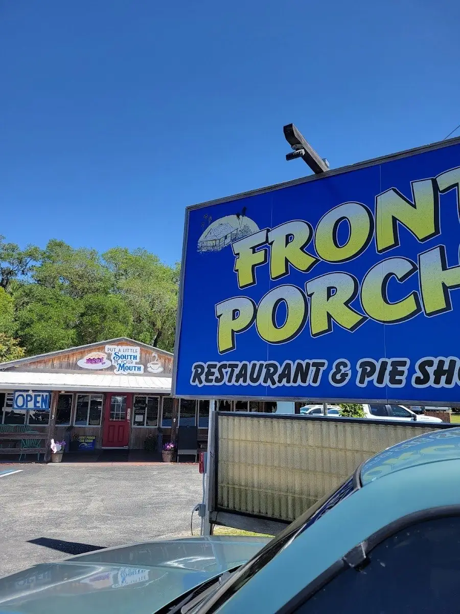
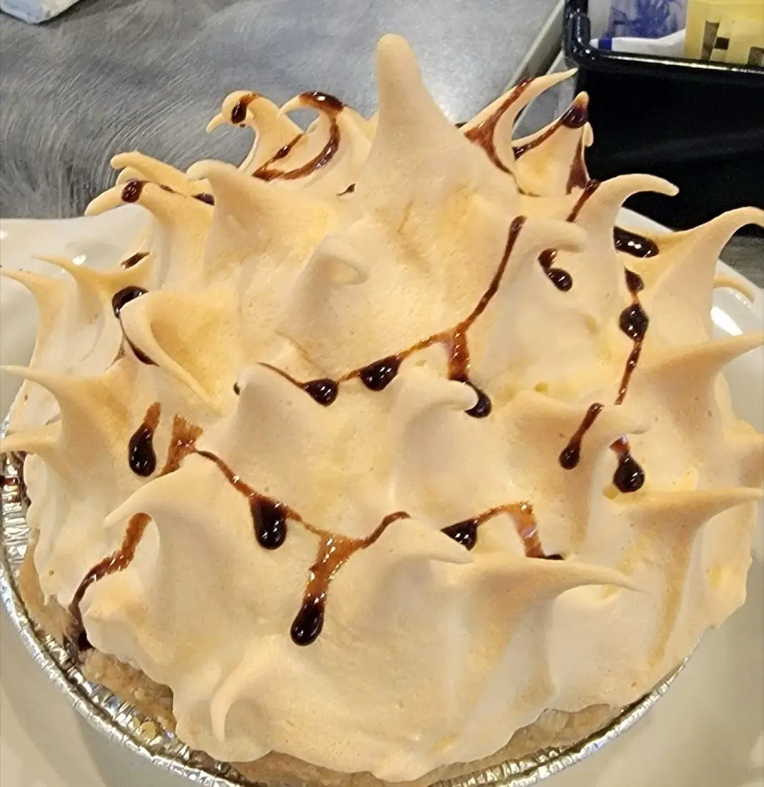
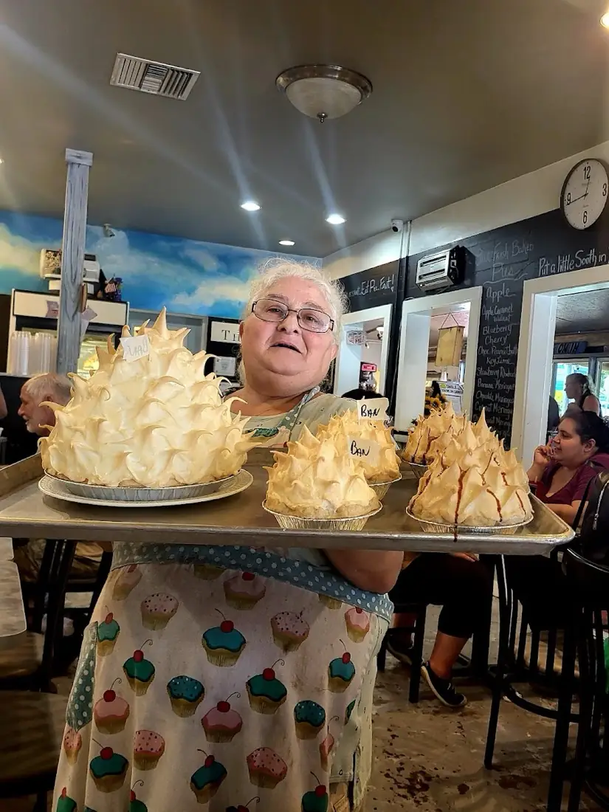
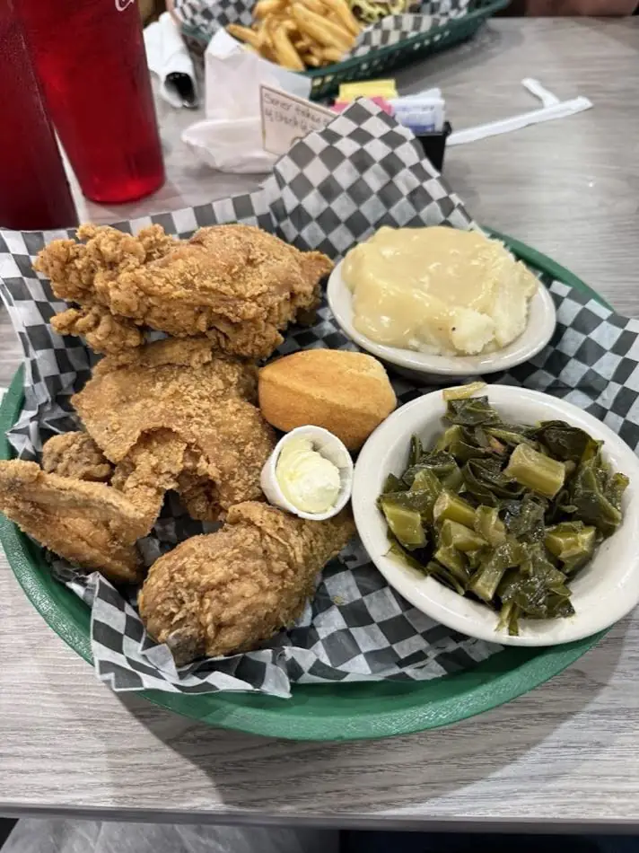
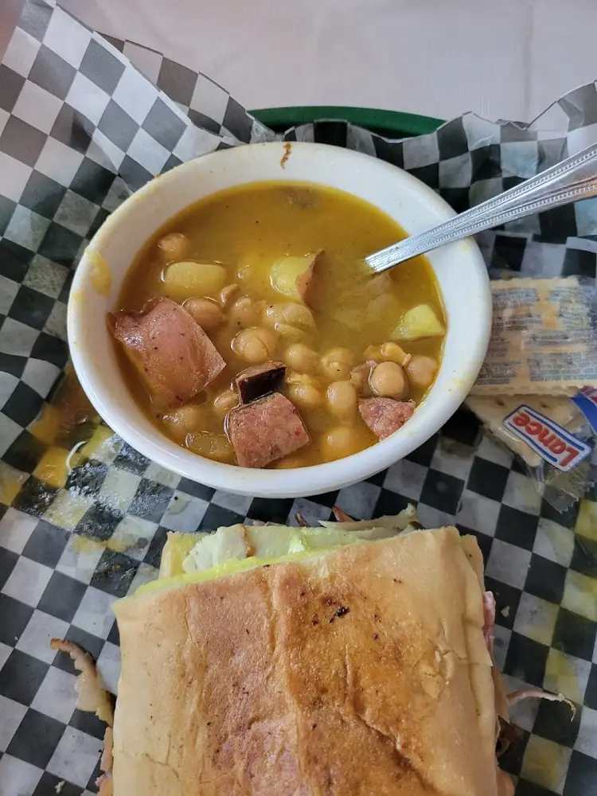
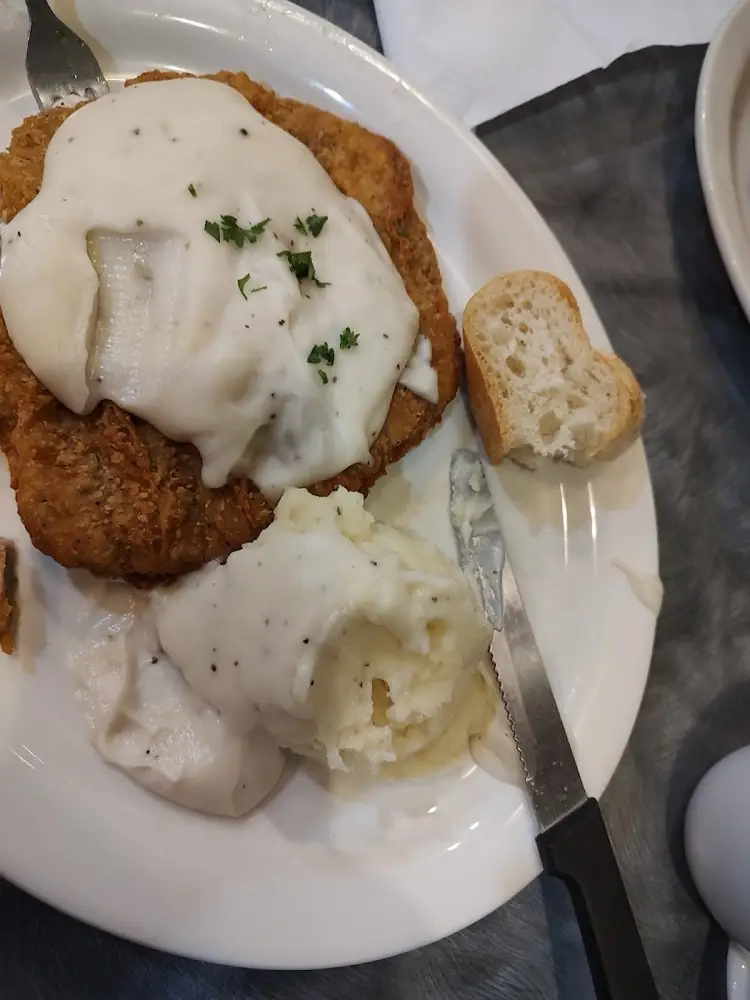
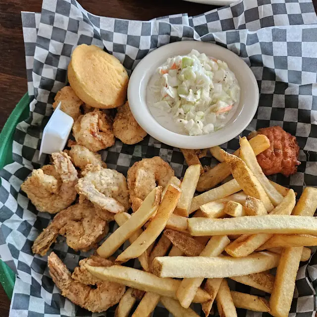
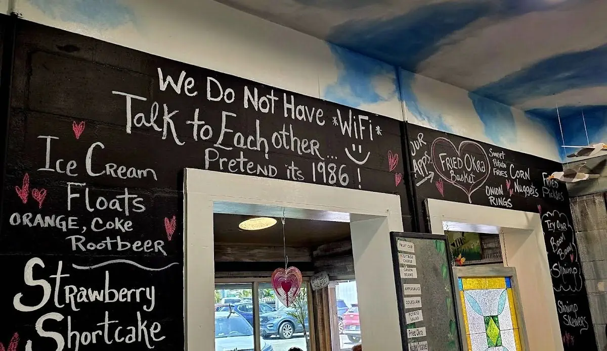
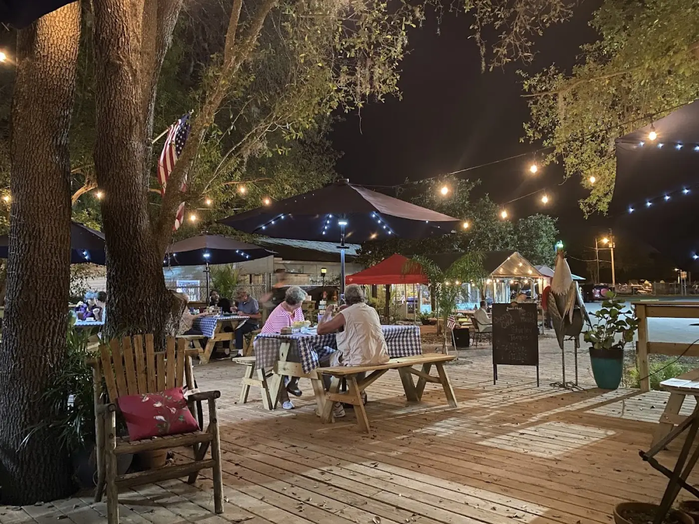

Front PorchRestaurant & Pie Shop
Put a Little South in Your Mouth!
Country breakfast from 7 AM, Southern home cooking all day, and fourteen kinds of pie baked fresh every morning, right here on N Florida Ave in Dunnellon.
- 4.4 from 3,300+ Google reviews
- $24 whole pies · local pickup



We’re well known for our pies.
Fourteen flavors, from Key lime and pecan to meringue piled sky-high. Give us a day’s notice and we’ll bake a whole pie with your name on it.
- $24Whole pie
- $6.49By the slice
- $8Mini pies
Order today → pick up as early as tomorrow, after 11 AM.
Come hungry for breakfast.
Biscuits and sausage gravy, country fried steak and eggs, fluffy pancakes, and grits done right. Breakfast is served until 11 on weekdays and 11:30 on Saturday and Sunday.
See the Breakfast Menu“Went back for breakfast. What?? $6 for two eggs, toast and taters?? Best deal in Dunnellon.”
What’s for supper?
Every supper plate comes with two veggies. Here are the ones regulars keep coming back for.
-

Stan the Man’s Famous Fried Chicken
Cooked fresh to order and worth the wait. Take-out buckets of 8, 12, 16 or 24 pieces.
-

½ Cuban & Spanish Bean Soup
Our most popular combination. The original Cuban in the Dunnellon area, with Mama Scally’s bean soup.
-

Country Fried Steak
Homestyle breaded beef steak, fried and smothered in white gravy.
-

Fried Shrimp Dinner
Large shrimp in our herb-and-spice blend with two veggies and hushpuppies.


Pretend it’s 1986.
That’s what the chalkboard says, and we mean it. Front Porch has been family owned and operated in Dunnellon since 1986: real plates, real gravy, and pie that comes out of the oven every morning.
Pull up a chair inside or out on the porch, catch some live music, and stay a while. Groups and families are always welcome. Just call ahead for big parties.
See y’all on the porch!
What folks are saying
★★★★★“First time here, breakfast was awesome! Fast and friendly service with a great atmosphere. Looking forward to trying the fresh baked apple pie next time!”
★★★★★“After spending the day on the river, it was exactly the kind of comforting, homestyle meal we were craving… And don’t leave without trying the pies! Not overly sweet, just the perfect balance.”
★★★★★“Food is plentiful and just like mom or grandma cooked it for you!!! Kept our drinks filled. Great service.”
Find the porch
12039 N Florida Ave, Dunnellon, FL 34434. Free parking, and just up the road from Rainbow Springs and the river.
- Tuesday7 AM – 8:30 PM
- Wednesday7 AM – 8:30 PM
- Thursday7 AM – 8:30 PM
- Friday7 AM – 8:30 PM
- Saturday7 AM – 8:30 PM
- Sunday7 AM – 8 PM
- MondayClosed